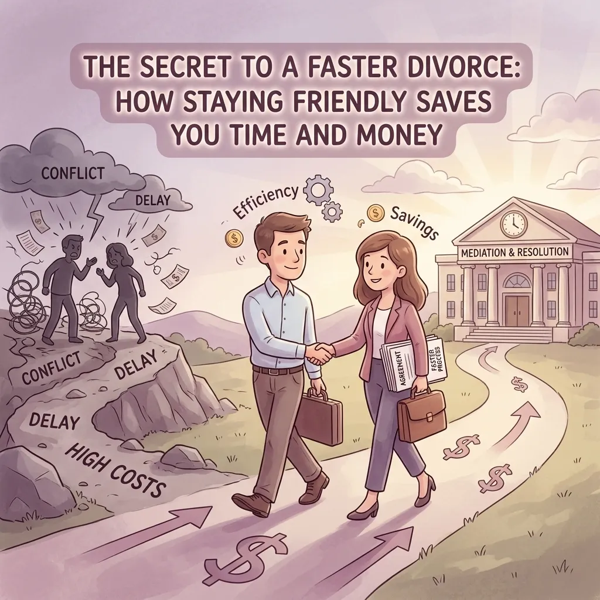

The Secret to a Faster Divorce: How Staying Friendly Saves You Time and Money

Divorce is a heavy word. For most people, it brings up images of angry people shouting in a courtroom or lawyers fighting over every last penny. We've all seen it in the movies, right? It looks like a long, scary, and very expensive battle.
But here is a secret that many people don't know: it doesn't have to be that way.
In fact, if you and your spouse can stay on "friendly" terms, you can save a lot of time and a whole lot of money. Around here in Jennings County, we call this an uncontested divorce. It simply means that instead of letting a judge decide your life, you and your spouse make the choices together.
As a lawyer for North Vernon, Indiana, I have seen both sides. I have seen divorces that drag on for years and cost a fortune. I have also seen "friendly" divorces that wrap up quickly, allowing both people to move on with their lives in peace.
If you live in Vernon, Commiskey, Hayden, or Scipio, and you are thinking about a divorce, this guide is for you. Let's talk about why staying friendly is the smartest thing you can do for your wallet and your sanity.
What Does a "Friendly" Divorce Really Look Like?
When I say "friendly," I don't mean you have to be best friends. You don't even have to like each other very much right now. What it really means is that you are willing to talk. It means you are both ready to be fair and solve problems instead of trying to "win."
In a "friendly" or uncontested divorce, you and your spouse agree on the big things, such as:
Who gets the house?
How will you split up the bank accounts and debts?
What will the schedule look like for the kids?
Who pays for what?
When you agree on these things, you don't need a judge to hold a trial. You just need a Jennings County attorney to help you put those agreements into the right legal papers.
Why Fighting Costs So Much Money
The biggest reason to stay friendly is simple: money.
In a typical "fighting" divorce, every time your lawyer talks to your spouse's lawyer, it costs money. Every time your lawyer goes to court to argue about a small detail, it costs money. If you have to hire experts to value your house or look at your retirement accounts because you can't agree, that costs even more money.
When you stay friendly, you cut those costs way down. You aren't paying two lawyers to fight each other. Instead, you are paying for help to get the paperwork done correctly. It is much cheaper to have a lawyer review an agreement you already made than it is to have a lawyer fight for that agreement in front of a judge.
I always tell my clients that every dollar you spend fighting is a dollar that isn't going toward your kids' college or your new life. As a small-town lawyer, I want to see your money stay in your pocket.
Saving Your Most Valuable Resource: Time
Besides money, the biggest thing you save is time. The court system in Indiana is busy. If you want a judge to decide your case, you might have to wait months just to get a date on the calendar. If the judge is busy with other cases, your trial might get pushed back even further.
In Indiana, there is a "waiting period" of 60 days from the time you file for divorce before it can be finished. In a friendly divorce, you can often be done very shortly after those 60 days are up. You sign the papers, the judge approves them, and you are finished.
If you are fighting, that 60 days can easily turn into 600 days. Do you really want to be stuck in legal limbo for two years? Probably not. Staying friendly lets you cross the finish line faster so you can start your next chapter.
The Power of Mediation
Sometimes, you want to be friendly, but you just can't agree on one or two things. Maybe you agree on the house, but you can't agree on who gets the tractor or how to split the credit card debt.
This is where mediation comes in. Mediation is just a fancy word for a meeting where a neutral person (the mediator) helps you and your spouse talk through your problems.
The mediator doesn't take sides. They don't tell you what to do. They just help you find a middle ground that works for everyone. Many families in North Vernon find that mediation is much less scary than a courtroom. It happens in an office, not a judge's chambers. You can wear jeans, drink coffee, and take breaks.
Mediation often leads to better results because you are the one making the choices. A judge doesn't know your family like you do. A judge might make a ruling that neither of you likes. In mediation, you don't stop until you find a solution you both can live with.
If you are looking for a lawyer in Vernon, Indiana to help with this, I can walk you through how the process works. You can learn more about how I help on my About Me page.
Keeping the Peace for the Kids
If you have children, staying friendly is even more important. Kids are smart. They can feel the tension when their parents are fighting. Even if you think you are hiding it, they know.
When you choose a friendly divorce, you are teaching your kids a great lesson. You are showing them that even when things get hard, adults can be respectful and work together. This makes the "co-parenting" part of life much easier later on. You still have to see each other at ball games, graduations, and weddings. Starting off on the right foot now makes those future events much better for everyone.
If you are worried about how to handle the kids during this time, you might find our post on how to prepare for a custody hearing helpful, even if you are trying to stay friendly.
Why a Local Lawyer Matters
You might wonder why it matters if your lawyer is from right here in Jennings County. My office is in Vernon, but I help people all over the area, from the busy streets of North Vernon to the quiet roads of Commiskey.
Being a local Jennings County attorney means I know how our local courts work. I know the people involved. I don't charge high travel fees like big-city lawyers might if they have to drive down here from Indy. I live here, I work here, and I care about our community.
I like to think of myself as a problem-solver. My job isn't to make your divorce harder or more dramatic. My job is to listen to what you have to say and give you options that make sense for your life. Whether you are dealing with a simple name change or a complex divorce, I wear many hats to make sure you feel supported.
Tips for Staying Friendly During a Divorce
If you want to try for a faster, cheaper, and friendlier divorce, here are a few tips:
Keep it private. Don't post about your divorce on Facebook or vent to mutual friends. This almost always leads to hurt feelings and more fighting.
Be honest. Share all the information about money and property. If your spouse thinks you are hiding something, they will stop being friendly very quickly.
Focus on the future. Don't get stuck on things that happened in the past. You can't change the past, but you can control what your future looks like.
Listen. Sometimes, your spouse just wants to feel heard. Even if you don't agree, listening can go a long way in keeping the peace.
Get professional help early. Talking to a lawyer doesn't mean you are "starting a war." It means you are getting the information you need to make good choices.
Ready to Move Forward?
Divorce is never easy, but it doesn't have to be a nightmare. By choosing to stay friendly and work together, you can save money, save time, and protect your family's peace of mind.
If you live in Jennings County and need someone to help you navigate this process, I am here to help. I will listen to your story and help you find the fastest, most peaceful path forward.
You don't have to do this alone. If you have questions about how an uncontested divorce works or want to know more about the local court process, check out our Jennings County Court 101 guide.
When you are ready to talk, feel free to reach out. Let's work together to get you through this so you can start focusing on your future.